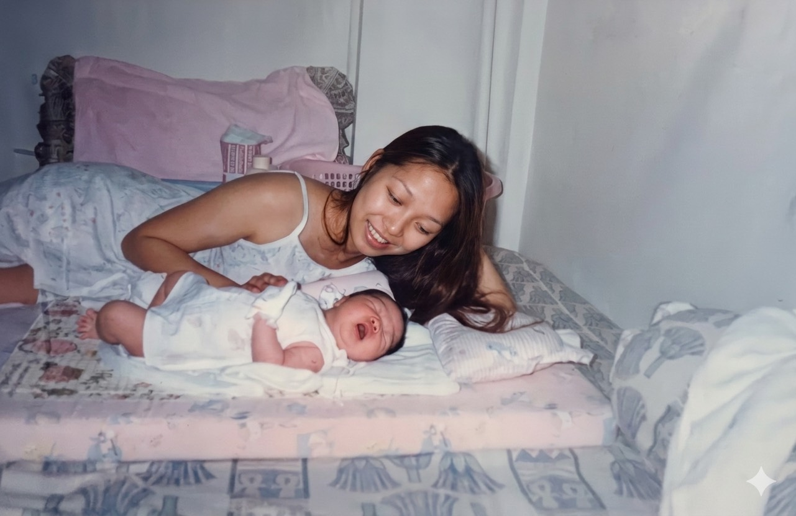
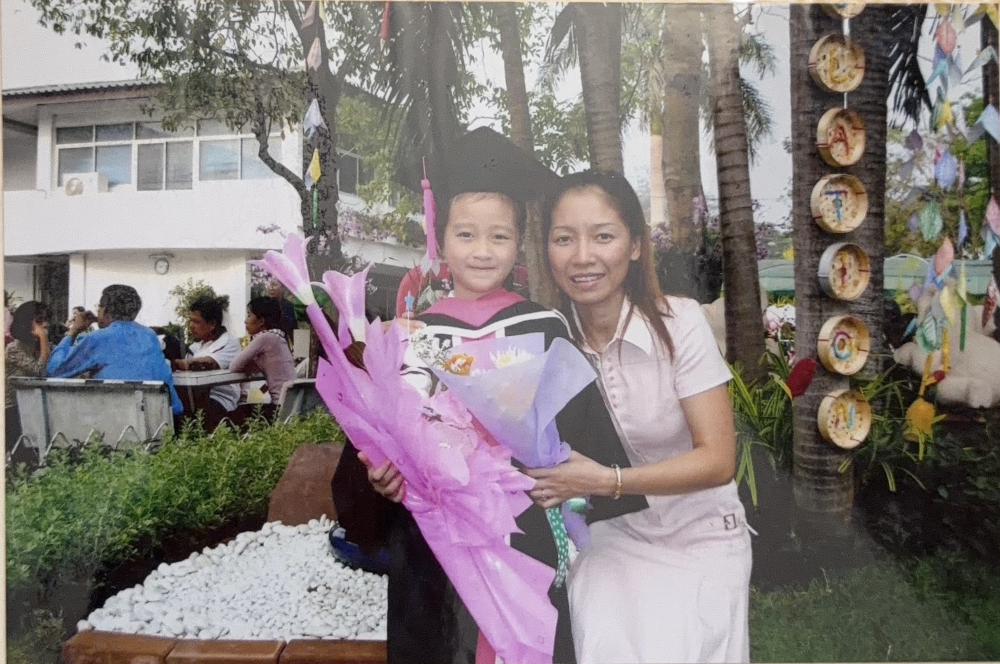
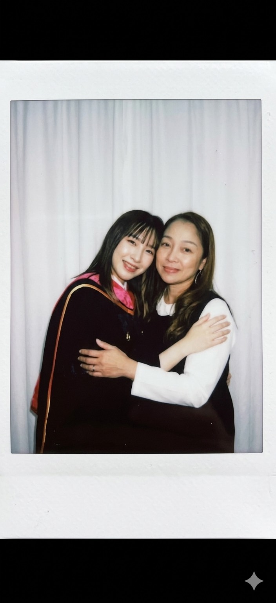

ความทรงจำ
เรื่องเล็ก ๆ
ที่หนูจำได้เสมอ
ตอนเด็ก
แม่คอยดูแลหนูตลอด
รูปตอนเป็นเบบี้ หนูน่ารักจัง55555


โตขึ้นอีกนิด
รับปริญญาเด็ก
รับปริญญาครั้งแรกของชีวิตหนู
วันรับปริญญา
เป็นความสำเร็จอีกขั้นของชีวิตหนู
ไม่เคยถ่ายด้วยกันแต่โชคดีที่สมัยนี้มีเอไอ55555


วันนี้
ขอบคุณที่เป็นแม่ของหนู
ถึงหนูจะไม่ค่อยพูดอะไรซึ้ง ๆ แต่หนูดีใจมากที่มีแม่อยู่ในชีวิต